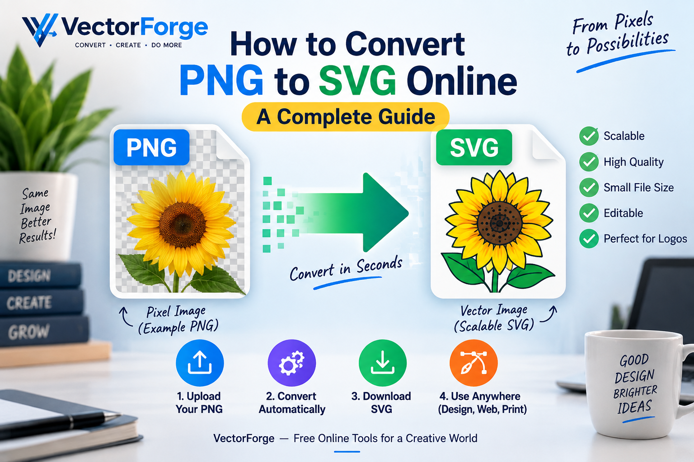

How to Convert PNG to SVG Online: A Complete Guide
Learn how to convert PNG to SVG online, understand raster-to-vector conversion, choose suitable PNG images and create scalable graphics for logos, icons and other design projects.

PNG is one of the most widely used image formats for digital graphics. It is especially useful for transparent images, logos, screenshots and web graphics. However, PNG is still a raster format, which means its artwork is represented by pixels.
When you need artwork that can scale to different sizes, you may want to convert PNG to SVG. SVG, or Scalable Vector Graphics, is designed for vector artwork and can be useful for logos, icons, illustrations and other graphics that need flexible sizing.
In this guide, we will explain what PNG and SVG are, why people convert PNG images to SVG, how the conversion works and which types of PNG images usually produce better vectorization results.
What Is a PNG File?
PNG stands for Portable Network Graphics. It is a raster image format commonly used for digital graphics and images that need transparency.
A PNG stores visual information as pixels. Because it supports lossless compression and transparency, it is widely used for logos, interface graphics, screenshots and other web assets.
The limitation is that increasing the size of a PNG does not create new vector shapes. If a relatively small PNG is enlarged substantially, individual pixels can become visible.
What Is an SVG File?
SVG stands for Scalable Vector Graphics. It is a vector graphics format that represents artwork using vector information such as paths, shapes and other elements.
Because vector artwork is not tied to one fixed pixel grid in the same way as a raster image, SVG is particularly useful for graphics that need to be displayed at multiple sizes.
The W3C SVG specification provides technical information about the SVG format and its capabilities.
PNG vs SVG: What Is the Difference?
The main difference between PNG and SVG is the way they represent graphics. PNG is raster-based and stores pixels, while SVG is vector-based and describes graphical elements using vector information.
| Feature | PNG | SVG |
|---|---|---|
| Type | Raster image | Vector graphic |
| Representation | Pixels | Paths, shapes and vector elements |
| Scalability | Limited by pixel resolution | Designed for scalable graphics |
| Transparency | Supported | Supported |
| Common uses | Web graphics, screenshots and transparent images | Logos, icons, illustrations and diagrams |
| Editing | Pixel-based editing | Vector-based editing |
Why Convert PNG to SVG?
There are several reasons someone may want to convert a PNG into an SVG. The most common reason is the need for scalable artwork.
Scalable Logos
A logo may need to appear as a small website icon, a social media graphic, a business card and a large sign. A suitable SVG version can make it easier to use the artwork at different sizes.
Better Vector Editing
SVG artwork can be opened in compatible vector design software and edited as vector elements. This can be useful when a designer needs to modify shapes, paths or other parts of suitable artwork.
Flexible Web Graphics
SVG is widely used for scalable graphics on the web. The MDN SVG documentation provides additional information about using SVG on the web.
How to Convert PNG to SVG Online
If you want to convert PNG to SVG online, a browser-based workflow can be convenient because you do not necessarily need to install desktop design software just for the conversion.
Choose Your PNG Image
Start with the PNG image you want to convert. Clear artwork with recognizable shapes and good contrast is generally easier to process.
Open the VectorForge Converter
Open the VectorForge image converter and upload your PNG file.
Process the Image
Start the conversion process and allow the tool to generate the SVG output from the uploaded PNG.
Download the SVG
Once processing is complete, download the SVG file and use it in compatible design, web or illustration workflows.
Try the PNG to SVG Converter
Process your PNG image directly in your browser with VectorForge.
Open VectorForge Converter →Which PNG Images Work Best for SVG Conversion?
Not every PNG produces the same result when vectorized. The original artwork has a major effect on the final SVG.
Simple Logos
Logos with a limited number of shapes and clear outlines are often good candidates for raster-to-vector conversion.
Icons and Symbols
Simple icons and symbols can also be suitable because their shapes are usually easier to identify than complex photographic details.
High Contrast Artwork
Strong contrast between the artwork and its background can make important shapes easier for a vectorization process to identify.
Clean Edges
Images with clearly defined edges are generally easier to trace than artwork with heavy blur, noise or extremely soft boundaries.
Tip: Start With the Best PNG You Have
A cleaner and clearer source image can make the vectorization process easier. Avoid using a heavily compressed, tiny or blurry PNG when a better source is available.
Can You Convert a PNG Logo to SVG?
Yes. Converting a PNG logo to SVG is one of the common reasons people search for a PNG to SVG converter.
Businesses may have an old logo saved only as a PNG but need a scalable version for websites, packaging, signage, clothing, business cards or other design materials.
If the logo has simple shapes, clean edges and good contrast, it can be a practical candidate for vectorization.
PNG to SVG for Cricut and Cutting Projects
SVG files are commonly used in digital cutting and craft workflows because vector artwork can describe shapes and paths. However, the exact requirements depend on the cutting machine and software being used.
Before sending an SVG to a cutting workflow, check the requirements of your particular machine or design application, including supported shapes, paths, fills and other features.
PNG to SVG for Websites
SVG can be useful for website graphics such as logos, icons and simple illustrations that need to appear at different sizes.
Developers can also work with SVG directly in web projects. For technical details, the MDN SVG documentation is a useful reference.
PNG to SVG Without Illustrator
You do not necessarily need Adobe Illustrator just to perform a basic PNG-to-SVG conversion. Browser-based tools can provide a simpler option when you need a quick conversion and do not want to install professional desktop software.
If you also work with JPG files, our guide How to Convert JPG to SVG Online explains the same raster-to-vector concept using JPG images.
PNG to SVG vs PNG to EPS
SVG and EPS are both associated with vector workflows, but they are different file formats and may be requested for different projects.
SVG is especially common for web graphics and scalable digital artwork. EPS has a long history in professional design and print workflows.
If your project specifically requires an EPS file, you can use our PNG to EPS converter.
You can also read our comparison guide: PNG vs JPG vs SVG: What's the Difference?
Does Converting PNG to SVG Increase Image Quality?
Converting a PNG to SVG does not magically recreate every detail of the original image. The result depends on the artwork and the vectorization process.
For simple logos, icons and illustrations, vectorization can produce useful scalable artwork. Complex photographs contain far more visual information and may not translate into a practical vector graphic in the same way.
Common PNG to SVG Conversion Mistakes
Simply Renaming the File
Changing a filename from .png to .svg does not convert the image. The underlying artwork must actually be processed into vector information.
Starting With a Tiny Image
A very small or blurry PNG can make it harder to identify clean shapes. Whenever possible, start with a clear source image.
Expecting a Photograph to Become a Simple Logo
Photographs contain textures, gradients and many colors. They are much more complex than simple logos or icons, so the vectorization result can be very different from the original.
Ignoring the Final Use
Before converting, consider where the SVG will be used. A web icon, cutting design, logo and detailed illustration may have different requirements.
Useful SVG Resources
For more technical information about SVG and web graphics, these resources are useful:
Frequently Asked Questions
How do I convert PNG to SVG?
Upload a suitable PNG image to a PNG to SVG conversion tool, process the image and download the resulting SVG file.
Can I convert PNG to SVG online for free?
Yes. Browser-based image conversion tools can provide online PNG to SVG conversion without requiring desktop software. You can try the VectorForge converter.
Is PNG the same as SVG?
No. PNG is a raster image format made from pixels, while SVG is a vector graphics format based on vector information.
Can I convert a PNG logo to SVG?
Yes. PNG logos with clear shapes, strong contrast and relatively simple artwork can be suitable candidates for vectorization.
Will converting PNG to SVG make every image perfect?
No. Results depend on the original PNG, its resolution, contrast, colors, shapes and complexity. Simple graphics generally work better than detailed photographs.
Can I convert PNG to SVG without Illustrator?
Yes. Browser-based conversion tools can provide a simpler alternative to installing professional vector editing software.
Final Thoughts
Converting PNG to SVG can be useful when a raster image needs to become scalable vector artwork. The process is particularly relevant for logos, icons, symbols and simple illustrations.
The quality of the original PNG matters. Clean edges, good contrast and relatively simple artwork generally provide a better starting point than small, blurry or highly detailed images.
If you have a PNG and need a scalable graphic, try the VectorForge converter and see whether your image is suitable for vectorization.
Ready to Convert Your PNG?
Try VectorForge and turn a suitable PNG into scalable SVG artwork.
Try VectorForge Free →